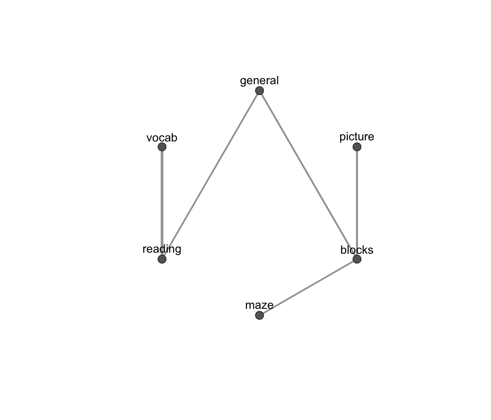

Penalty functions for graph structure search
penalty.RdCollection of penalty functions employed in the structural-EM algorithm and penalized maximum likelihood estimation for graph structure search.
Details
The choice of the penalty function is via argument penalty in the functions searchGGM and mixGGM. Possible options are "bic" (default), "ebic", "erdos", and "power". Functions "ebic", "erdos", and "power" depend also on a hyperparameter beta which can be set using the corresponding argument in searchGGM and mixGGM.
Let denote with E the number of non-zero entries in the adjacency matrix corresponding to the graph structure of a covariance/concentration graph model (i.e. the number of edges); n and V denote number of observations and number of variables (or nodes). The above options correspond to the following penalty functions:
"bic"– A BIC-like penalty term is placed on the structure of a graph. This penalty is given by: $$0.5 E \log n$$ The hyperparameterbetais not used."ebic"– An EBIC-like penalty term for graphical models is placed on the structure of a graph. This penalty is given by: $$0.5 E \log n + 2\beta E \log V$$ For this penalty function,betais a value in the range[0,1]. Default isbeta = 1, encouraging sparser models. Clearly the casebeta = 0corresponds to"bic"."erdos"– Let denote byTthe number of all possible edges in a graph, i.e. \(T = {V\choose 2}\). The penalty function is given by: $$-E\log \beta - (T-E)\log(1 - \beta)$$ For this penalty function,betais a value in the range(0,1). For small values ofbetathe penalization tends to favor situations where the graph decomposes into disjoint blocks. Default isbeta = log(V)/T, a value for which the expected number of arcs is equal tolog(V)and such that the graph will almost surely have disconnected components."power"– Let denote withd_jthe degree of nodej, i. e. the number of nodes connected to it. This penalty function is defined as: $$\beta \sum_j^V \log(d_j + 1)$$ In this case,betais a positive value. Default isbeta = log(nV), a value which place the penalty term on a similar magnitude of"bic"and"ebic", but denser graphs will tend to be less penalized.
An user-defined penalty function can be also provided in input of argument penalty in the functions searchGGM and mixGGM. In this case, the penalty must be an object of class "function" and have as argument graph, like for example "f <- function(graph, beta)"; see "Examples".
References
Fop, M., Murphy, T.B., and Scrucca, L. (2019) Model-based clustering with sparse covariance matrices. **Statistics and Computing**, 29:4, 791–819.
Examples
# fit concentration graph model with power law penalty
data(ability.cov)
n <- ability.cov$n.obs
mod1 <- searchGGM(S = ability.cov$cov, n = ability.cov$n.obs,
model = "concentration", penalty = "power", beta = 2*log(n))
mod1
#>
#> 'fitGGM' object containing:
#> [1] "omega" "graph" "model" "loglikPen" "loglik" "nPar"
#> [7] "n" "V" "penalty" "search"
plot(mod1)

if (FALSE) { # \dontrun{
# two disconnected blocks of correlated variables
library(MASS)
V <- 10
n <- 500
mu <- rep(0, V)
sigma <- matrix(0.9, V,V)
diag(sigma) <- 1
x <- cbind( MASS::mvrnorm(n, mu, sigma),
MASS::mvrnorm(n, mu, sigma) )
#
# fit a covariance graph with erdos penalty
mod2 <- searchGGM(x, model = "covariance",
penalty = "erdos")
plot(mod2, "adjacency")
# user defined penalty function
data(iris)
x <- iris[,-5]
n <- nrow(x)
V <- ncol(x)
ref <- matrix(0, V, V)
#
# penalize graphs different from a reference graph structure
myPenalty <- function(graph, beta)
{
beta * sum( abs(graph - ref) )
}
#
mod3 <- mixGGM(x, K = 3, model = "covariance",
penalty = myPenalty, beta = 2*V*log(n))
plot(mod3)
} # }